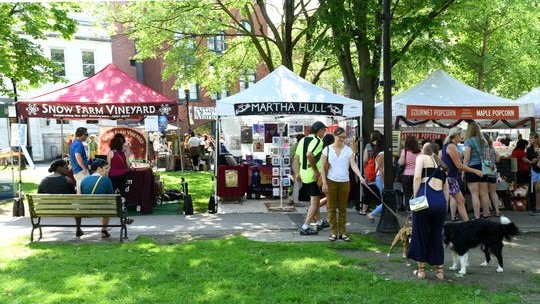
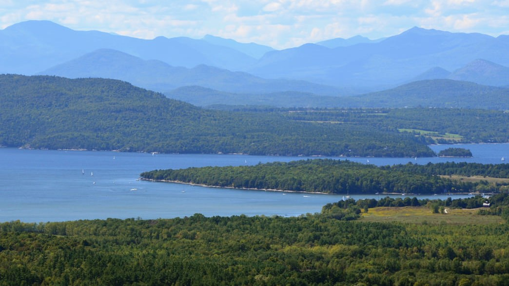
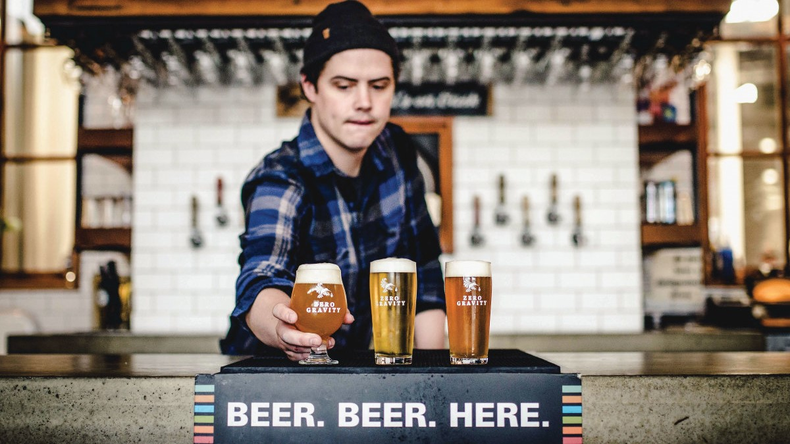
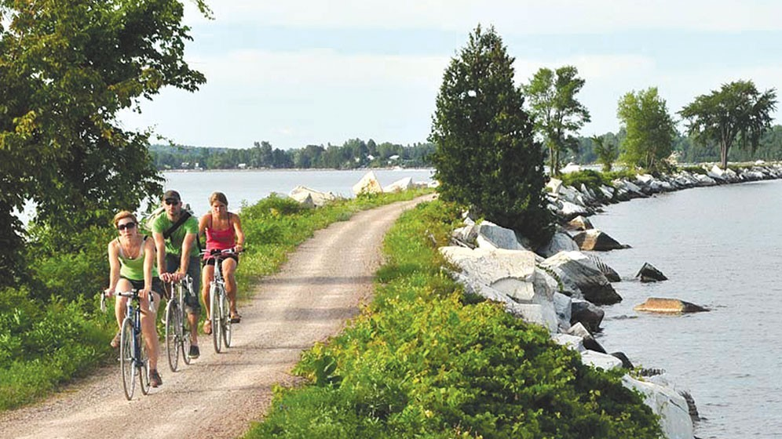

Burlington Farmer's Market on Saturday Morning

The Burlington Farmers Market is one of the best things you can do in town, located at City Hall Park. It features all local produce including meats, cheeses, fresh baked breads, muffins, and pastries, juices, coffees, and so much more. The market is open from 8:30am to 2:00pm.
Hike (or drive up) Mount Philo

The hike is about an hour round trip. At the top, you'll get a beautiful view of Lake Champlain and the Adirondack mountains across the lake in New York. There's also a road that leads directly to the top if you're not a hiker. The address is 5425 Humphreys Road, Charlotte, VT 05445.
Visit Vermont's Craft Breweries

So much good beer in Burlington. There are certainly lots of breweries all over Vermont, but here are a few that are located right in town we recommend you check out: Zero Gravity, Foam Brewery, Queen City, Switchback, and Simple Roots (also Citizen Cider for you cider drinkers).
Walk or Bike Along the Lake Champlain Waterfront

If you're up for it, we recommend you bike about 15 miles out the causeway because it has some incredible views. But let's be realistic - you probably won't do that. There's still a lot to see! There are a number of parks and beaches you can find nearby: Oakledge, Leddy Park, and North Beach to name a few.